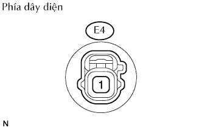

HỆ THỐNG ĐỒNG HỒ ĐO/ĐỒNG HỒ BÁO > KIỂM TRA TRÊN XE |
| 1. KIỂM TRA ĐỒNG HỒ TỐC ĐỘ XE |
Kiểm tra hoạt động.
Dùng máy thử đồng hồ tốc độ xe, kiểm tra rằng chỉ số của đồng hồ tốc độ nằm trong vùng cho phép được chỉ ra trong bảng dưới đây. Hơn nữa, kiểm tra hoạt động chính xác của đồng hồ công tơ mét.
| Điều kiện tiêu chuẩn | Phạm vi cho phép |
| 20 km/h | 21 đến 25 km/h |
| 40 km/h | 41.7 đến 46.2 km/h |
| 60 km/h | 62.7 đến 67.2 km/h |
| 80 km/h | 83.4 đến 88.4 km/h |
| 100 km/h | 104.3 đến 109.3 km/h |
| 120 km/h | 125.1 đến 130.6 km/h |
| 140 km/h | 145.8 đến 151.8 km/h |
| 160 km/h | 166.2 đến 173.2 km/h |
| 180 km/h | 186.9 đến 194.5 km/h |
Kiểm tra vùng lệch của chỉ báo tốc độ xe.
| 2. KIỂM TRA TÍN HIỆU RA CỦA CẢM BIẾN TỐC ĐỘ XE |
Kiểm tra dạng sóng tín hiệu đầu ra.
Tháo đồng hồ táp lô, nhưng không được ngắt giắc.
Dùng máy đo hiện sóng, kiểm tra dạng sóng của đồng hồ công tơ mét.
| Hạng mục | Nội dung |
| Nối dụng cụ đo | C10-6 - C10-22 |
| Đặt dụng cụ đo | 5 V/DIV., 20 msec./DIV. |
| Tình trạng xe | Xe đang chạy |
| 3. KIỂM TRA ĐỒNG HỒ TỐC ĐỘ ĐỘNG CƠ |
Kiểm tra hoạt động.
Nối đồng hồ điều chỉnh động cơ và khởi động động cơ.
Hãy so sánh giá trị tốc độ động cơ của dụng cụ thử và giá trị của xe dưới các điều kiện sau:
| Báo tốc dộ động cơ tiêu chuẩn (vòng/phút) | Vùng chấp nhận được (rpm) Dữ liệu trong ( ) là chỉ để tham khảo |
| 700 | 630 đến 770 |
| 1,000 | (900 đến 1,100) |
| 2,000 | (1,850 đến 2,150) |
| 3,000 | 2,800 đến 3,200 |
| 4,000 | (3,800 đến 4,200) |
| 5,000 | 4,800 đến 5,200 |
| 4. THÁO CỤM ỐNG HÚT CÓ BƠM VÀ ỐNG ĐỒNG HỒ |
Ngắt giắc nối F13 của bơm và đồng hồ đo nhiên liệu.
Bật khoá điện ON và sau đó kiểm tra vị trí của kim đồng hồ báo nhiên liệu.
Nối các cực 2 và 3 của giắc nối phía dây điện.
Bật khoá điện ON và sau đó kiểm tra vị trí của kim đồng hồ báo nhiên liệu.
| 5. KIỂM TRA ĐÈN BÁO MỨC NHIÊN LIỆU |
Ngắt giắc nối F13 của bơm và đồng hồ đo nhiên liệu.
Bật khoá điện ON và sau đó kiểm tra rằng đồng hồ báo mức nhiên liệu chỉ E và đèn báo mức nhiên liệu sáng lên.
| 6. KIỂM TRA ĐÈN BÁO ÁP SUẤT DẦU THẤP |
|  |
Ngắt giắc E4 của công tắc.
Nối cực 1 của giắc nối phía dây điện với mát thân xe.
Bật khoá điện ON và sau đó kiểm tra rằng đèn cảnh báo áp suất dầu thấp ON.
| 7. KIỂM TRA ĐÈN CẢNH BÁO PHANH |
Kiểm tra đèn báo phanh tay.
Ngắt giắc nối P3 của công tắc.
Nối cực 1 của giắc nối phía dây điện với mát thân xe.
Bật khoá điện ON và sau đó kiểm tra rằng đèn cảnh báo bật ON.
Kiểm tra đèn báo mức dầu phanh.
Tháo giắc nối B2 của công tắc.
Nối các cực 1 và 2 của của giắc nối phía dây điện.
Bật khoá điện ON và sau đó kiểm tra rằng đèn cảnh báo bật ON.